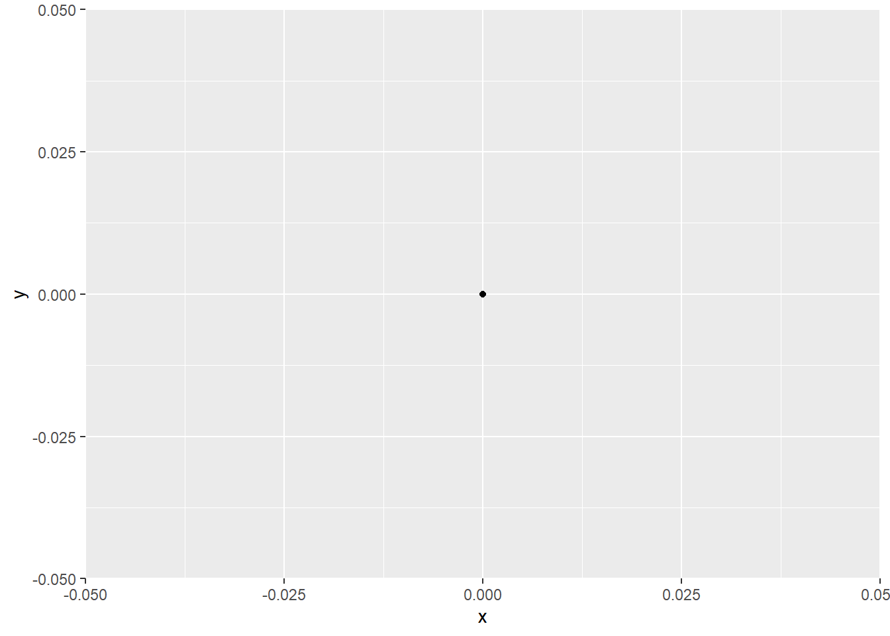
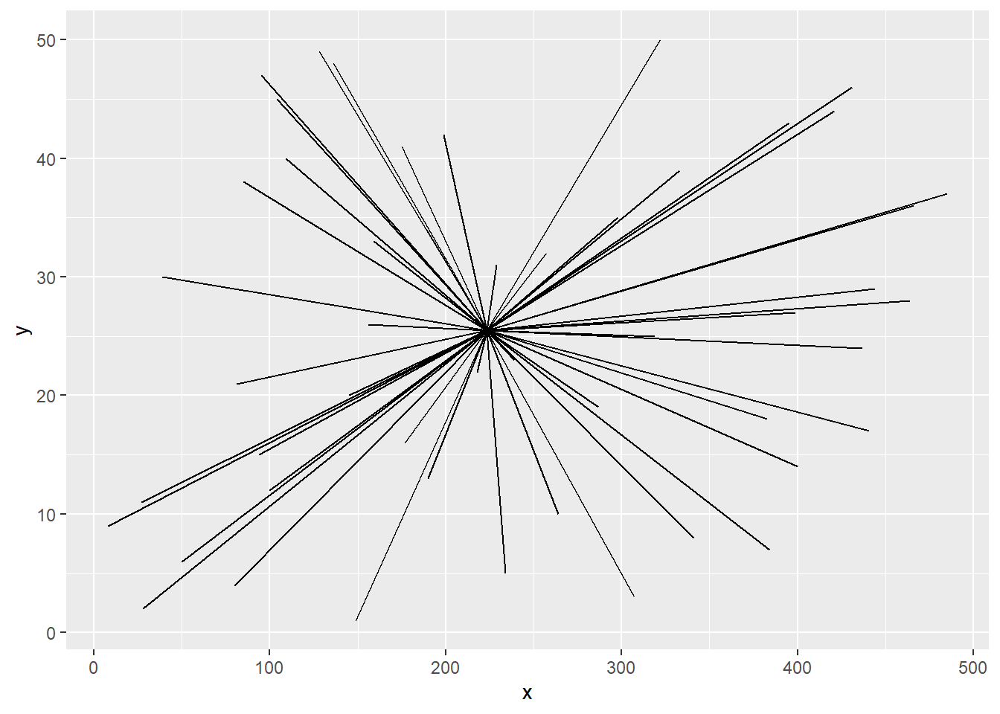
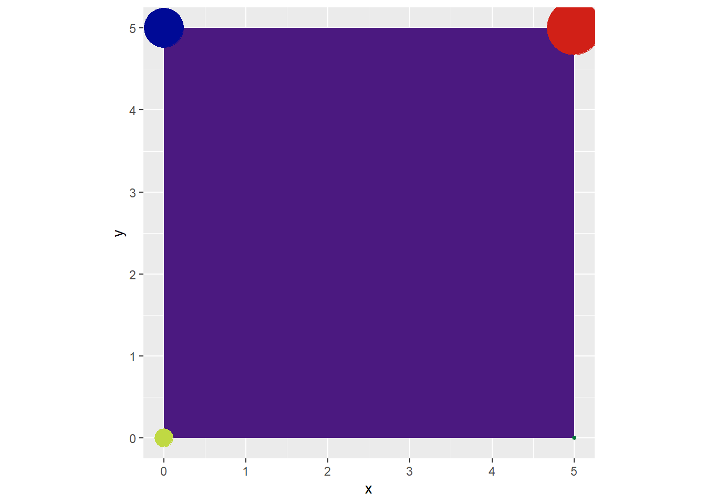
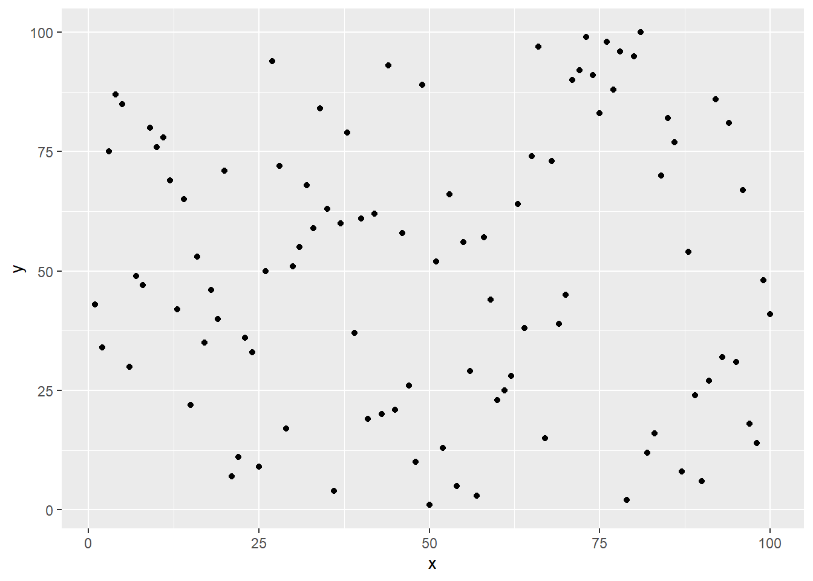
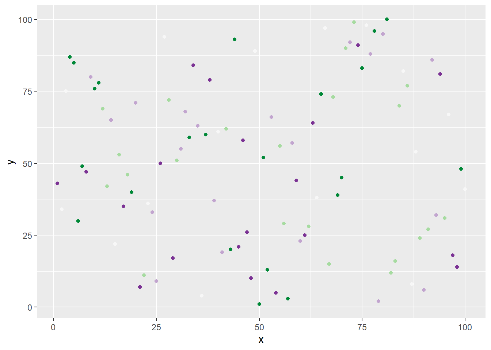
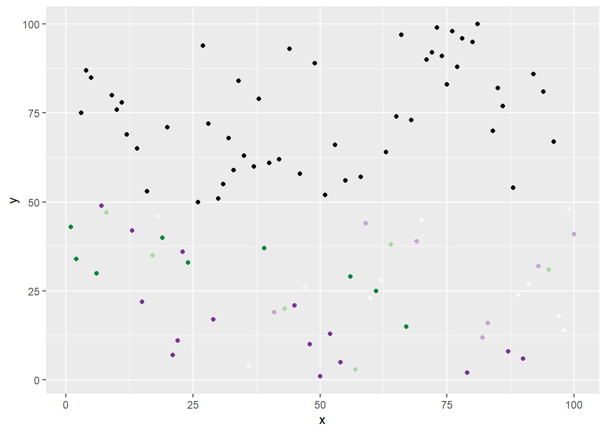
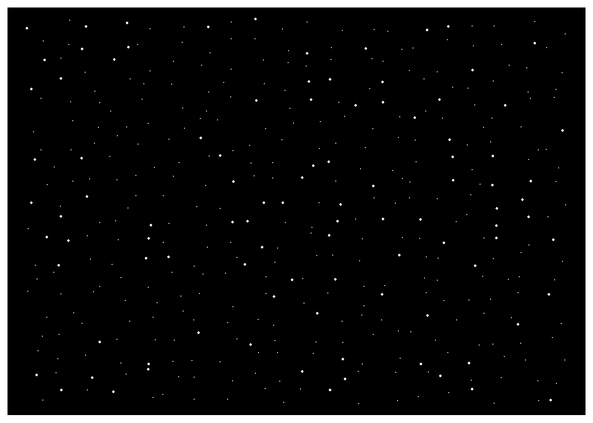
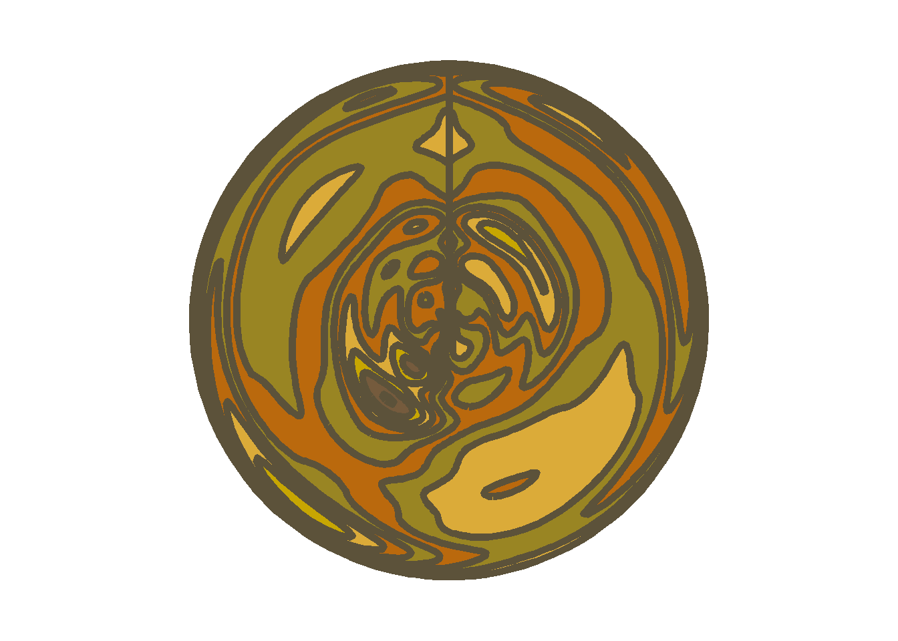
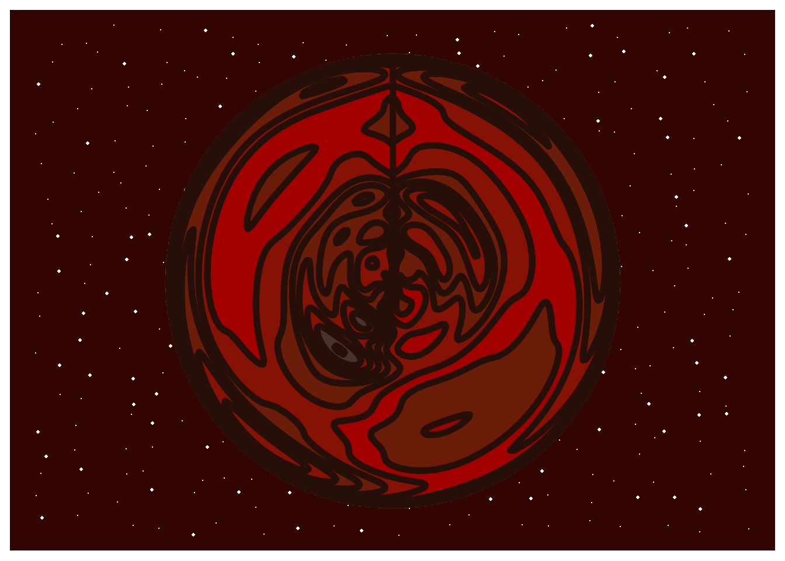

Thinking Outside The Grid - A “bare bones” intro to Rtistry concepts in R using ggplot.
Recently I’ve discovered the courage to dive into creative coding and generative aRt in R. Something that the R community calls “Rtistry.” My Rtistry journey so far has been an amazing and tranquil expedition into a world that seemed intimidating and scary on the outside but is honestly just a bottomless pit of fun and creativity on the inside.
r
data art
rtistry
ggplot
beginner
Author
Meghan Harris
Published
October 19, 2021
Before I write any further, I want to give a special shout out to @ijeamaka_a, @djnavarro, & @jiwanheo who I personally credit for inspiring me within the last month specifically (my only month being an aRtist so far)!
So, this post will be a bit different from my others. I’m going to talk about some very basic concepts and perspectives you can think about while starting your own Rtistry journey in ggplot. This includes basics on geoms, aesthetics, layering, etc. But then I’m also going to walk you through two of my Rtistry examples and code to get you started.
This article is intended for those who have some experience with ggplot building in R but may not have realized how to transition from making “regular” visuals to Rtistry. This article goes over basic concepts that more seasoned users may already know. If you believe it is too basic, you can jump straight to the code for the finished pieces to see these basics applied together. Seeing how others have constructed things may help you understand how you can apply your programming knowledge to create Rtistry of your own! For those of you that need these basics, I hope this article is helpful and encourages you to start thinking outside of the ggplot grid and start creating your own pieces!
Don’t want to read and just want the code? Here’s the code for:
If you want to follow along with any of the following basic examples, you can find the Intro to Data Art repo on my GitHub here.
Introduction
First things first: let’s get one thing straight, I am NOT an expert, nor am I a computational scientist or a professional generative artist. While knowledge of some “math things” can be super helpful, you don’t need to know complex computational mathematics to make Rtistry (aRt). Granted, if you enjoy and want to create aRt similar to the works of Thomas Lin Pedersen and Danielle Navarro, then maybe you do! But as a beginner, it’s important to remember that your Rtistry is your work and opportunity to learn, grow as an R programmer, and create pieces you can be proud of. Remember that your aRt is an expression of you and no one else and that there is no “right” way to do Rtistry. One of the things I love most about creating aRt is the fact that I don’t have to get anything “right.” For those of us who use R for work/educational endeavors, we must ensure that our statistics, programming, and literally everything else is correct. Creating Rtistry can provide your mind with not only a creative outlet but a way to still practice programming in R in a low-stress environment where things don’t have to be “right.”
Why Rtistry?
Some people may think of the concept of creating aRt and may think it’s a waste of time since no analyses are performed. If you think that way, you have every right to that opinion. What I can share with you, though, is why I personally love creating Rtistry:
Gives my brain a rest from “real work”
Allows me to practice programming skills in a stress-free environment
Gives me satisfaction from flexing my creative skills
Gives me more content for professional portfolios
Ethics
While using others’ work as inspiration to give yourself ideas is OK, you should always strive to create something of your own merit. Just like in the physical art world, you may also find that some aRtists may not want to share their process or code with you. Those that are new to Rtistry may be shocked by this. Some newbies may even think that creators come off as standoffish or rude if they decline to share their work. This could be because of how supportive the R community usually is and how we are always seemingly ready to share our code.
One thing to remember is that a creator could decline to share their code for many reasons. Those decisions are personal and left up to each aRtist on an individual basis. The aRtists that do exceptionally unique work will have usually put a lot of effort and hours into their pieces to a point where it may even feel proprietary. Some aRtists choose to sell their outputs not only because they have made something truly personal to them, but because they’ve also made something unique that probably hasn’t existed before.
When you find an Rtistry piece that appeals to you, you could try to understand what’s happening behind the scenes instead of asking directly for the code. It tends to be a fun challenge to figure out what’s happening yourself. It’s a lot of work, yes, but I am willing to bet that if you use R for professional work, the work and study you do to figure out how to create your pieces will benefit you in the long run.
What you choose to do with the pieces you create is entirely up to you. Some aRtists get their work printed for sale or personal use, some look into selling them as Non-fungible Tokens (NFTs) and some literally save their output and never save their code, completely erasing its footprint in a cathartic click of a button. Whatever you do, always give credit where credit is due; don’t assume that everyone is willing to share their code with you (but if they do, always express gratitude and give credit for the assist); and try to be ethical in everything that you do.
Geoms
If you want to start making data aRt in ggplot, having some knowledge on ggplot geoms will prove to be very useful. If you’ve ever participated in a #tidytuesday challenge or have made visuals in ggplot, you’re probably familiar with them. The key to using geoms to create your aRt is to understand what type of data is expected for each geom. Some basic ones to start with are:
There is no limit to which geoms you can use for aRt in ggplot. Your only barrier would be not having your data formatted appropriately for whichever geom you wish to use. For example, if you want to use geom_segment() you’d need to know that this function expects four different data points (x, xend, y, and yend). The geom functions will usually do a good job of throwing an error and letting you know if you’re missing any data points. If you’re interested, you can always learn more about ggplot with the official cheat sheet or book.
Geoms Examples:
You can think of basic geoms as instruments (paintbrushes) in your Rtistry toolkit. Here are a few simple examples of how each can be used:
Geom points can be used for textures, smaller details, or optical illusions like in the image Candy Rope:
Candy Rope
Geom line and path can be used to create linear details and abstract aRt :
Linear Fury
Geom segment & geom curve can be used for linear/curved details, or larger components:
Moonscape
Geom Polygon can be used to make any shape that can exist on ggplot’s coordinate system, Like lots of randomized squares:
Be Squared
Making and Applying (Rtistry) aRt Data to Geoms
If the geoms are the instruments in your toolkit, the data is your ink/paint. The data you provide to each geom will produce visuals on ggplot’s coordinate system. Thinking about it broadly, to make one point on a basic ggplot you need at least one x and one y value:
library(tidyverse) #For everything data====
Warning: package 'tidyverse' was built under R version 4.1.3
-- Attaching packages --------------------------------------- tidyverse 1.3.2 --
v ggplot2 3.4.0 v purrr 1.0.1
v tibble 3.1.8 v dplyr 1.0.10
v tidyr 1.3.0 v stringr 1.5.0
v readr 2.1.3 v forcats 0.5.2
Warning: package 'ggplot2' was built under R version 4.1.3
Warning: package 'tibble' was built under R version 4.1.3
Warning: package 'tidyr' was built under R version 4.1.3
Warning: package 'readr' was built under R version 4.1.3
Warning: package 'purrr' was built under R version 4.1.3
Warning: package 'dplyr' was built under R version 4.1.3
Warning: package 'forcats' was built under R version 4.1.3
-- Conflicts ------------------------------------------ tidyverse_conflicts() --
x dplyr::filter() masks stats::filter()
x dplyr::lag() masks stats::lag()
## Example 1: Data Frame====single_point <-tibble(x=0, y=0)## Example 1 ggplot====single_point %>%ggplot(aes(x = x, y = y))+geom_point()

A Single Point
Having several x and y points is what will get you some shapes, lines, and other things:
## Example 2: Data Frame====random_lines <-tibble(x =sample(1:500, 50),y =1:50)## Example 2: ggplot====random_lines %>%ggplot(aes(x=x, y=y, xend =median(x), yend =median(y)))+geom_segment()

Random Lines
The magic happens when you can start viewing the grid differently. When you begin to understand the relationship the values in a data frame have with the ggplot coordinate system, it becomes easier to realize what data is needed to create your desired output. For example, if you want to create abstract art, you might practice making datasets with randomized values. If you want to make intentional pieces, you might spend time studying the axes of the ggplot and determine what range of values you need to make the figures you want. The process of creating data for Rtistry and applying them to geoms can be as simple or complicated as your creativity allows. Let’s just go over a simple example with a basic square.
We know that a square consists of four lines. Each line has a start and endpoint. So, we at least need to make four points on our plot. Since each point consists of two values (x and y), we’ll need eight values in total. Four x points and four y points.
## Example 3: Data Frame====square <-tibble(x =c(0,5,5,0), y =c(0,0,5,5),labels =1:4)
Because we want to make a shape that’s closed (so we could potentially fill it with color), we’d want to use geom_polygon(). You might be thinking “why not use geom_line() instead?” because a square consists of four lines, but let’s look at that. If we make a data set of the points that are supposed to make a square but then pass it through to geom_line() or geom_path() functions, we get these instead:
geom_line() looks this way because it plots points in order by the x axis. Try to take a moment to compare the data and the result and understand why it came to be.
geom_path() looks closer to a square! But we’re missing a side! This is because geom_path() doesn’t create a fully closed shape by default. geom_path() is the same as geom_line() except it plots points in the order in which it appears in the dataset.
Now let’s use geom_polygon() with the same data set:
There we go; An actual square. geom_polygon() is similar to how geom_path()’s process of drawing lines works. The only difference is that the start and endpoints are automatically connected and you can add a “fill” aesthetic to your new shape. By default, ggplot does fill the square. You can set fill = NA to make it empty, but remember to set a color argument if you want to see the “border” of the polygon make its shape:
# Example 6: Geom_Polygon ggplot with no fill====square %>%ggplot(aes(x = x,y = y,label = labels))+geom_polygon(fill =NA, color ="black")+geom_label()+coord_equal()
Square - geom_polygon() ggplot with no fill
As a beginner, it’s tempting to try and make every cool idea that comes to you, but it’s a good idea to spend time with these basics first. You can explore creating aRt data sets with formulas you may be interested in or with any of the “non-visual” functions I’ll discuss later in the article. Once you feel comfortable creating aRt datasets and applying them to geoms, you might be able to find cool and unexpected ways to plot things!
Aesthetics
The next important set of basics to learn about is ggplot aesthetics. We’ve already used aesthetics in the previous section’s examples, but let’s think about them a bit more. Each base ggplot and geom function comes with available aesthetics. If you’ve ever made a ggplot visualization and changed any colors, shapes, etc., you’re already familiar with the foundations needed to start customizing the look/style of your work.
There’s two ways you can map aesthetics onto your visuals:
The aes() function in your initial ggplot() function
Directly into the geom function you wish to change.
As you explore what you want to do and how you want to style your data, you may find that you prefer one way over the other. If you get stuck on this part, take some time to think about what you’d like to see on the grid and then think logically about which method would make sense.
For example, if you have a variable that contains hex color codes attached to each row in a dataset, it may make sense to set up the aesthetic in the aes() function since it’s already connected to the data. If you have a circumstance where you only want one geom to be one color, or you want to map a different data set of aesthetics to the geom, you can put it into the actual function.
A word of caution though, if you want to add values from a different dataset, make sure they have the same number of rows as the initial data set that you are piping into the initial ggplot’s function. If they don’t match up and you don’t set the inherit.aes argument to FALSE in the geom, you’ll get an error. There are ways to use different data sets in addition to the initial one used at the beginning of your ggplot call. I’ll touch on this in the layering section of this article. For now, let’s take a quick look into setting aesthetics in our square example:
Let’s say we want to color our square purple and make colored dots on each point of the square. Because the polygon will only be filled with one color, we can set that in the geom_polygon() call. If we add a color variable to our data set with individual hex color codes attached to each observation, we can place it in the aes() function and get our desired output with the following code:
# Example 7: Geom_Polygon ggplot with colored points====## Example 7: Data Frame====square_color_points <-tibble(x =c(0,5,5,0),y =c(0,0,5,5),colors =c("#c0d943","#027337","#d12017","#000a96"))## Example 7: Geom_Polygon ggplot with colored points====square_color_points %>%ggplot(aes(x = x,y = y))+geom_polygon(fill ="#4b1980")+geom_point(color = square_color_points$colors)+coord_equal()
Square- geom_polygon() with colored points
We can also change multiple aesthetics at once. We can change the size of our points too:
# Example 8: Geom_Polygon ggplot with colored points and Random Sizes====square_color_points %>%ggplot(aes(x = x,y = y))+geom_polygon(fill ="#4b1980")+geom_point(color = square_color_points$colors,size =sample(1:20, nrow(square_color_points)))+coord_equal()

Square - geom_polygon() with randomly sized points
As you get more comfortable with aesthetics, you will find that there may be different ways to explore these settings programmatically using various ideas or functions. One of the greatest things about Rtistry is realizing that you may already have the programming knowledge necessary to use these basic components to create amazing things.
At the end of the day, if you find yourself stuck on how to do something, it may be helpful to search google, the RStudio Community forums, or even Stack Overflow for the answers to programming questions that may help you piece together your Rtistry. In my experience, I’ve always had the best results when I take a moment to stop and think about what I am asking R to do programmatically. R doesn’t know that I want to randomize colors for an image, but it will know if I want it to pick random hex color values from a vector by using the sample() function. I can then apply that result to an aesthetic option and get the desired output.
If I were googling for the answer to this example, I wouldn’t type “how to randomize colors of geom_point()” but instead I’d type “how to randomly pick values from a vector in R programming.” It may take a little bit to understand this thought process, but you are programming after all, so try to approach any troubleshooting as if you were coding for “actual work”.
Using “non-visual” Functions For Your Visuals
The first time I realized that you could pass additional functions into aesthetic options - my mind was blown! I did not realize that anything other than a string of a hex color could go into a color aesthetic in ggplot. My mind was so stuck on how I learned to code for ggplot. It was also bound by the fact that I never needed to think about setting any options outside of regular color “strings” for my everyday work. Take the random data below. We could change the colors of these random points by applying some random colors…
## Example 9: Data Frame====random_points <-tibble(x =1:100,y =sample(1:100))## Example 9: ggplot of randomized points====random_points %>%ggplot(aes(x=x, y=y))+geom_point()

Ggplot of randomized points
## Example 10: ggplot of randomized points with randomized colors====random_points %>%ggplot(aes(x=x, y=y))+geom_point(color =sample(RColorBrewer::brewer.pal(5,"PRGn"), nrow(random_points), replace =TRUE))

Ggplot of randomized points with randomized colors
…Or by placing a logical function in the color aesthetic for geom_point(). For example, we can tell R that we only want to apply randomized colors to any data points that have a y value that’s less than 50, otherwise observations with a y value that’s greater than or equal to 50 will just be colored black with an ifelse() function:
# Example 11: ggplot of randomized points with randomized colors and logic applied====random_points %>%ggplot(aes(x=x, y=y))+geom_point(color =ifelse(random_points$y <50,sample(RColorBrewer::brewer.pal(5,"PRGn"), nrow(random_points), replace =TRUE),"black"))

Ggplot of randomized points with randomized colors and logic applied
Since there is no limit to the different types of functions a user can make, the possibilities of different functions that can be added to aesthetics seems endless. A few functions that might help you not only in aesthetics, but working with your data prepping are listed below to get you started:
sample() – Randomly take a sample from elements of an object
rep() – Replicate (repeat) elements in a vector or list
Apply family functions (lapply, sapply, etc.) – Can be used to apply functions on different objects like matrices, vectors, or lists.
Remember that this is not an exhaustive list, but just a taste of some commonly used functions to hopefully get the gears turning about different ways you can manipulate your ggplot aesthetics and actual Rtistry data.
Layering
The last basic concept in this post is ggplot layering. Adding layers with the layer() function or even annotations with the annotate() function is very useful as it allows the user to add different layers of data. You can also achieve this by adding geom functions as you would normally, but if you ever want to add geoms that pull from different data sources this way, you need to set the inherit.aes argument to FALSE, as this will then allow the ggplot to build without error.
These multiple ways of layering allows for endless possibilities as piecing together an image this way provides a bit more flexibility. Take the two datasets below. One is intended to just create some lines with geom_segment(), and the other is intended to just create circles in between each line with geom_point(). Because we want 4 lines and 3 circles, the amount of data needed to map these things don’t match up. We can tell this on a quick glance by seeing that the number of rows in each data set don’t match up:
## Example 12: Lines_data Data Frame====Lines_data <-tibble(x =rep(1, 4),xend =rep(5, 4),y =seq(0,6, by =2),yend = y )## Example 12: Circles_data Data Frame====Circles_data <-tibble(x =3,y =unique(abs(seq(0,6, by =2) -1)),size =1:3)##Logic Check: Do these dataframes have the same number of row?##nrow(Lines_data) ==nrow(Circles_data)
[1] FALSE
If we try to add these together by just using a geom function ,geom_point(), and supplying the Circles_data directly into geom_point() without typing inherit.aes = FALSE, the console will throw an error:
Warning: Using `size` aesthetic for lines was deprecated in ggplot2 3.4.0.
i Please use `linewidth` instead.
Error in `geom_point()`:
! Problem while computing aesthetics.
i Error occurred in the 2nd layer.
Caused by error in `FUN()`:
! object 'xend' not found
This error tells you that object xend is not found. This is because we are attempting to override the data frame that is attached to the entire ggplot (Lines_data) with Circles_data now and xend definitely does not exist in Circles_data and therefore “can’t be found.” To fix this specific example and get the desired results, simply add inherit.aes = FALSE into the geom_point() function. If desired, you also could just move the aesthetics for Lines_data into the geom_segment() function but as you will find, there are multiple ways to get to the same result. For this example though, we’ll just add the inherit.aes argument to geom_point().
## Example 12: Adding Lines_data and Circles_data together with inherit.aes in geom====Lines_data %>%ggplot(aes(x=x, y=y, xend = xend, yend = yend))+geom_segment(size =15)+geom_point(data = Circles_data, aes(x=x, y=y, size = size), inherit.aes =FALSE)
ggplot of Lines_data and Circles_data layered together with the addition of geom_point()
We can also use the layer() function or the annotate() function to achieve similar results. Both methods are used in the example below:
# Example 13: Adding Lines_data and Circles_data together with layer function====Lines_data %>%ggplot(aes(x=x, y=y, xend = xend, yend = yend))+geom_segment(size =15)+layer(geom ="point",data = Circles_data,stat ="identity",position ="identity",mapping =aes(x=x, y=y, size = size),inherit.aes =FALSE)
ggplot of Lines_data and Circles_data layered together with the layer() function
# Example 14: Adding Lines_data and Circles_data together with annotate function====Lines_data %>%ggplot(aes(x=x, y=y, xend = xend, yend = yend))+geom_segment(size =15)+annotate(geom ="point",x= Circles_data$x, y= Circles_data$y, size = Circles_data$size)
ggplot of Lines_data and Circles_data layered together with the annotate() function
Both functions produce similar images. The layer() and annotate() functions have their own pros and cons based on what you’d like to do. As shown in the code snippets, each method of layering in ggplot is similar but has its own differences that may be favored in certain situations. I’d encourage you to read and explore these methods of layering a bit more, and to see what works best to execute your ideas.
Planet Quad – aRt Example
Planet Quad
Now that we’ve gone over some technical basics, let’s look at two Rtistry examples I’ve created. The first is Planet Quad. The creation of Planet Quad demonstrates how we can utilize other packages like patchwork and cowplot to create our own Rtisrty. Let’s break this down step-by-step.
Each layer in ggplot is built on top of each other in the order in which it appears in the code. For this image, that means we want the space/stars background to be behind our planets- so we can start with that first.
We want four different plots with a similar design in different colors, so we can start by creating a named vector of the background colors we want to use. I always use hex colors, but you can use whatever format you’d like. I’ll name mine Space_colors:
# Library Load-In====library(tidyverse) # For everything datalibrary(cowplot) # For placing plots on top of each other easily with ggdraw and draw_imagelibrary(patchwork) # For packaging up the plots in the final image
Warning: package 'patchwork' was built under R version 4.1.3
Attaching package: 'patchwork'
The following object is masked from 'package:cowplot':
align_plots
# Star Backgrounds====## Making four different stars "backgrounds" with four different colors====Space_colors <-c("Topleft"="#000000","Topright"="#130321","Bottomleft"="#330500","Bottomright"="#8a4500")
Next, we want to create the data for the stars in our backgrounds. Because I want the image to look pretty filled in, I’ll apply the crossing() function to the data in this tibble that I’ll name stars:
# Making a data set that will be used to create all star backgrounds====stars <-tibble(crossing(x =seq(1,2000,100),y =seq(1,2000,100)))
Next, we want to make a list because we’ll run iterations of our stars dataset through a ggplot call that will also iterate through our vector Space_colors. This will result in a list of four similar plots that all have a different color scheme. We’ll name this list All_stars and name the plots inside of the list to make it easier to track each plot as our session continues:
## Making the list to hold the "space" plots====All_stars <-list()## Iterating through the "space_colors" to make four different plots====for(i inseq_along(Space_colors)){ All_stars[[i]] <- stars %>%ggplot(aes(x = x, y = y))+geom_jitter(size =sample(c(.02,.04,.06,.8),nrow(stars), replace =TRUE), color ="white")+theme_void()+theme(plot.background =element_rect(fill = Space_colors[i], color ="#ffffff", size =6)) }
Warning: The `size` argument of `element_rect()` is deprecated as of ggplot2 3.4.0.
i Please use the `linewidth` argument instead.
## Naming the plots just to help keep track of what's going where====names(All_stars) <-names(Space_colors)
Now we can check and look at one of our plots by typing All_stars$Topleft in the console to verify that it looks like what we were expecting:
All_stars$Topleft

The “Topleft” image in the All_stars list. A ggplot of the stars data
Now, we can work on our planets. The planets are actually just a geom_density2d_filled() plot that will go through four iterations of the planet data set with its coordinate system set to [coord_polar()](https://ggplot2.tidyverse.org/reference/coord_polar.html. Just like we did for the stars data, we also want four very similar plots with different colors. Again, we can make a similar function to create a list of these plots. We just need to generate four different iterations of the data set and pick some colors for the planet surfaces. Let’s start with picking color palettes for planets and different colors for the border lines of each planet. We can place each palette into a list called Planet_colors and each border color into a vector called Planet_borders:
# Planet Creations====## Setting the color palettes for each planet quad====Planet_colors <-list("Topleft"=c("#194157","#008dd7","#085b88","#26925e","#095c88"),"Topright"=c("#480463","#392242","#1e0329","#bf9232","#120b17"),"Bottomleft"=c("#47322d","#6b1c09","#a30000","#6b1d09","#851205"),"Bottomright"=c("#c7a602","#998523","#ba690d","#755b3d","#dbab39"))## Setting the colors of each planet's borders====Planet_borders <-c("Topright"="#333333","Topright"="#120b17","Bottomleft"="#260f09","Bottomright"="#5c523a")
We’ll create some randomly sampled data to draw out our planets to encourage some weirdness in its final presentation. We’ll name the dataset planet:
# Making a dataset that will be used to create all the planets====planet <-tibble(crossing(x =sample(1:1000,100, replace =TRUE),y =sample(1:2000, 100, replace =TRUE)))
Now we’ll create our list, named All_planets, that will be filled with our four different planets after it runs through our for-loop:
## Making the list to hold the "planet" plots====All_planets <-list()## Iterating through the "planet_colors" to make four different planet plots====for(i inseq_along(Planet_colors)){ All_planets[[i]] <- planet %>%ggplot(aes(x = x, y = y))+scale_fill_manual(values =sample(Planet_colors[[i]],100, replace =TRUE))+#100 is just a arbitrary "safe" number I picked. geom_density does background calcs to create levels that varies based on data.geom_density2d_filled(color = Planet_borders[i], size =2)+coord_polar(clip ="on")+theme_void()+theme(legend.position ="none")}## Naming the plots just to help keep track of what's going where====names(All_planets) <-names(Planet_colors)
All these plots are now in our list All_planets. We can peek at one by typing All_planets$Bottomright into the console. Because a seed hasn’t been set anywhere, yours may look different than mine and that’s all right!
All_planets$Bottomright

The “Bottomright” image in the All_stars list. A ggplot of the stars data
Now we can save all these planet plots as images out into the directory so we can load them right back in as png files. Please note that if you are following along, you may have to alter the directory to avoid errors as this directory is located within my Data_aRt GitHub repo in my Planet Quad project file.
# Saving Planets into the directory====for(i inseq_along(All_planets)){ggsave(paste0("planets/",names(All_planets)[i],"_planet.png"), All_planets[[i]],bg ="transparent", device ="png")}
Saving 7 x 5 in image
Saving 7 x 5 in image
Saving 7 x 5 in image
Saving 7 x 5 in image
A snapshot of the processed PNG files in my personal working directory locally.
Next, we need to bring the processed png files back into the environment. We can do this with the png package. Because I’m only using this once, I chose to call in the readPNG() function directly from the package instead of loading the package itself. We’ll store the images in a list called Planet_PNGs.
# Loading Planets back into the environment as PNGs====Planet_PNGs <-list()for(i inseq_along(All_planets)){Planet_PNGs[[i]] <- png::readPNG(paste0("planets/",names(All_planets)[i],"_planet.png"))}## Setting names to keep track of the planets====names(Planet_PNGs) <-names(All_planets)
Now that we have png files, we can place these “on top” of our star backgrounds we made earlier using the ggdraw() and draw_image() functions from the cowplot package with for-loops. This time, we’ll store them in a list called Combined_plots:
# Combining both the stars and planets to create four plots in total====Combined_plots <-list()for(i inseq_along(All_planets)){ Combined_plots[[i]] <-ggdraw(All_stars[[i]]) +draw_image(Planet_PNGs[[i]])}## Setting names to keep track of the plots===names(Combined_plots) <-names(Planet_PNGs)
Just like before, we can take a peek at any of the plots in the Combined_plots list to make sure it looks as expected. I’ll use Combined_plots$Bottomleft in the console to see:
Combined_plots$Bottomleft

The stars and planet plots combined
Looking good! Almost done! Now we can pluck() each of our plots out and save them to individual objects! Because there’s only four of them, I’ll just copy and paste that code because this is Rtistry and it’s totally OK to be lazy. It’s your work. It’s your aRt . Do what you want!
## Plucking out all the individual plots===Topleft <- Combined_plots %>%pluck("Topleft")Topright <- Combined_plots %>%pluck("Topright")Bottomright <- Combined_plots %>%pluck("Bottomright")Bottomleft <- Combined_plots %>%pluck("Bottomleft")
# Final output construction with patchwork functions====Planet_Quad <- (Topleft + Topright) / (Bottomleft + Bottomright)# View the piece#Planet_Quad
Planet Quad - Finished
And voila! We have our finished piece! I’ve noticed that sometimes patchwork may render in some borders around these images if ggsave() is used. In these cases, I just export using the Export button in the RStudio IDE.
Rainbow Rose – aRt Example
Rainbow Rose
Finally, we’re at our last example! Rainbow Rose is an Rtistry piece that showcases one way trigonometric functions can be used to create cool results. This Rtistry piece was created from a beautiful accident when I mistyped some code while attempting to draw a circle from scratch in ggplot (yes, the geom_circle() function from ggforce exists, but I was trying to improve my manual ggplot skills 🤷🏾️).
To start out, we need to set up some specifications that will alter how the data is plotted onto ggplot’s Cartesian coordinate system. This includes calculating the “theta”(angles) of our intended circle, the number of divisions/data points we want in the dataset “n”, and the radial setting we wish to have for the visual. Because we want to give an effect that starts from the center of the image, we set the radial setting, “r” to a vector that spans from 1 to our “n” value.
# Library Load-In====library(tidyverse) # For everything data# Setting parameters to prep ggplot to plot data in a "circular" fashion on the Cartesian coordinate system====## Angle "slices"/ Sine/Cosine Frequency====theta <-seq(0, 40*pi, length =100) ## Number of divisions/rows in the data wanted====n <-500## "Radial" setting of the "circle" to create "n" different marks====r =1:n
Next, I’ll use one of my favorite color palettes that I found for one of my #TidyTuesday submissions. I’ll store them in a vector simply called “colors”:
## Setting up the custom color palette====colors <-c("#af3918", "#a21152", "#822b75","#612884","#154baf","#0b82b9", "#277e9d","#488e35","#e3a934","#b2336a")
Now I’ll create a simple data frame. I’ll create my x and y variables using the cos() and sin() functions respectively:
# Placing everything into a dataset====data <-tibble(x =cos(theta)*r,y =sin(theta)*r)
Finally, we’ll put everything together. Using geom_path() on this dataset and passing our colors vector into it creates our Rainbow Rose!
# Pulling it all together====Rainbow_Rose <- data %>%ggplot(aes(x = x, y = y, color = color))+geom_path(color =rep(colors, each = n/10), size =1)+theme_void()+theme(legend.position ="none",panel.background =element_rect(fill ="black"))# View it #Rainbow_Rose
Rainbow Rose - Finished
Mesmerizing! Play around and investigate the options used to try and understand how/why ggplot generated the data this way.
For example, if we change geom_path() to geom_line() we get this:
Rainbow Rose with geom_line() instead of geom_path()
Still pretty, but a completely different piece! Earlier in the article I mentioned the difference between geom_path() and geom_line() . Given their differences, does it make sense why this version looks this way? These are just some of the questions you can think about and ask yourself while you’re on your Rtistry journey!
There’s a Package for That
If you read all of this and still feel intimidated, that’s OK. You can still try to get into Rtistry with some of the following packages:
aRtsy developed by Koen Derks“Aims to make generative aRt accessible to the general public in a straightforward and standardized manner”
Ggvoroni developed by Robert Garrett and Thomas Fisher “With ggvoronoi we can easily draw Voronoi diagram heatmaps, with help from packages deldir and ggplot2.”
contouR developed by Ijeamaka Anyene“contouR is a package that is a wraparound for ggplot2::geom_contour() to use for generative aRt .”
Jasmines developed by Danielle Navarro“The jasmines package is what Danielle uses to make a lot of her generative artwork with R. Internally it relies heavily on the ambient package, and you may need to install the developer version of ambient to make it work.”
Final Remarks
This concludes The Tidy Trekker Intro to Data Art post! I really hope that those of you who are just trying to start out in Rtistry found this to be useful. While the basics content truly is basic, it really is a good chunk of the foundation needed to eventually progress into more complex generative aRt . Sometimes it can be difficult to disseminate the how-tos or guides for a creative process. As you saw with the Rainbow Rose piece, sometimes aRt can be created by accident. Those accidents can only be unique to you. The best way to improve your Rtistry skills is to just jump in and play. Use the time to zone out, relax, and engage with data in a way you may not have before.
Have you started your Rtistry journey? Do you think some crucial basics were left out of this post? Feel free to contact me directly! Respectful discourse is always welcome!
![]()


{kind=link}